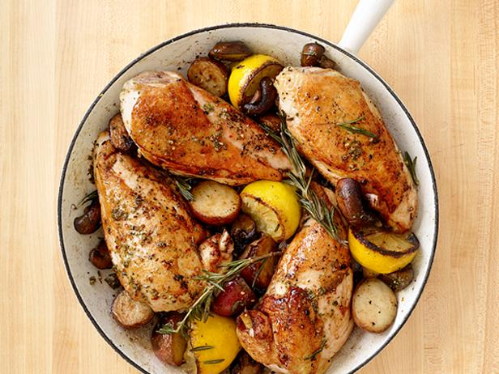

Rosemary Chicken

Description
Chicken breast with rosemary and lemon rub served with mushrooms and potatoes.
Ingredients
- 3/4 lb small red-skinned potatoes; quartered
- Salt
- 2 sprigs fresh rosemary plus 1 tablespoon leaves
- 1 clove garlic; smashed
- 1 pinch of red pepper flakes
- Juice of 2 lemons; save squeezed halves
- 2 tablespoon extra virgin olive oil
- 4 chicken breasts; 6 to 8 oz each
- 10 oz cremini mushrooms; halved
Steps
- Preheat the oven to 450 degrees F. Cover the potatoes with cold water in a saucepan and salt the water. Bring to a boil over medium- high heat and cook until tender, about 8 minutes; drain and set aside.
- Pile the rosemary leaves, garlic, 2 teaspoons salt and the red pepper flakes on a cutting board, then mince nd mash into a paste using a large knife. Transfer the paste to a bowl. Stir in the juice of 1 lemon and the olive oil. Add the chicken and turn to coat.
- Heat a large cast-iron skillet over medium-high heat. Add the chicken, skin-side down, cover and cook until the skin browns, about 5 minutes. Turn the chicken; add the mushrooms and potatoes to the skillet and drizzle with the juice of the remaining lemon.
- Add the rosemary sprigs and the squeezed lemon halves to the skillet; transfer to the oven and roast, uncovered, until the chicken is cooked through and the skin is crisp, 20 to 25 minutes.
Nutrition
Serving: Calories 413; Fat 23 g (Saturated 5 g); Cholesterol 87 mg; Sodium 1,055 mg; Carbohydrate 19 g; Fiber 2 g; Protein 32 g
Return home